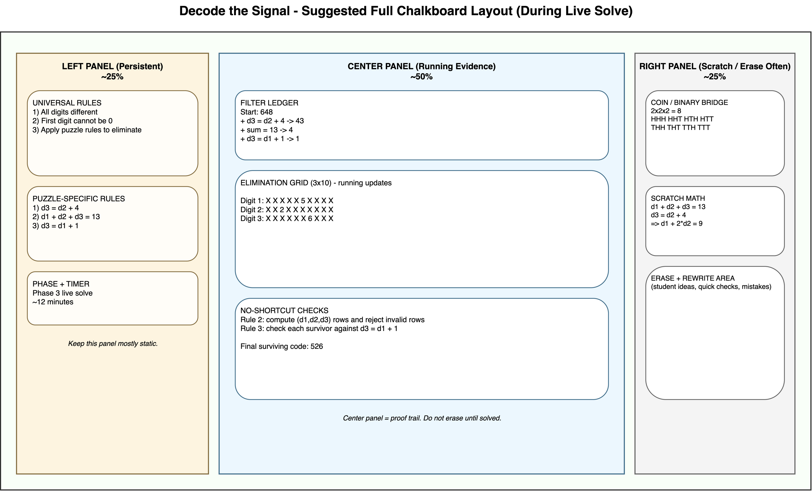

Chalkboard Script — Decode
the Signal
35-Minute Core + Optional
Extensions
Use this as a live facilitation script. Each phase gives you exactly
what to draw, what to say, and what to ask.
Print-ready note:
- This Markdown file includes page-break markers for export.
- Run
./export_chalkboard_markdown.sh in this folder to
generate a printable HTML from this Markdown.
Quick Start (Use Tomorrow)
- Write the Universal Rules Board first.
- Run the condensed counting intuition bridge (coins -> binary
table -> decimal place value).
- Deliver the full Voyager hook and mission framing.
- Solve one 3-digit puzzle live with the class using ledger +
elimination grid.
- Run pair practice (Appendix A).
- Debrief and preview 5-digit as extension.
Universal Rules Board
(Write This First)
Write this exactly before any puzzle-specific rules:
| UNIVERSAL RULES (apply to every puzzle) |
| 1. All digits are different (no repeats). |
| 2. The first digit cannot be 0. |
| 3. We will apply puzzle-specific rules to eliminate
possibilities. |
Teacher line:
- "Rule 2 is not optional. Digit 1 cannot be 0. We are making an ID
code, not leaving the first slot empty."
Core Lesson Map (35 Minutes)
| Phase |
Time |
Outcome |
| 1. Counting Intuition Bridge |
7 min (or 2 min quick version) |
Students justify multiplication of choices |
| 2. Hook + Mission Framing |
4 min |
Students buy into mission story |
| 3. Live Solve (3-digit) |
12 min |
Students apply elimination process |
| 4. Pair Work |
8 min |
Students practice process independently |
| 5. Debrief + 5-digit Preview |
4 min |
Students connect method to larger puzzle |
Suggested Wide Chalkboard
Layout
Use this layout so students always know where to look.

Balanced-use guidance:
- Left panel: write once, update only when switching puzzles.
- Center panel: never erase until the puzzle is solved; this is the
"proof trail."
- Right panel: erase often; use for truth table, substitution, and
quick checks.
Suggested center-panel stack (top to bottom):
- Filter ledger table
- Current elimination grid
- Candidate check lines (for Rule 2 and Rule 3)
Teacher line:
- "Left side is our rules, center is our evidence, right side is our
sandbox."
Phase 1 — Counting
Intuition Bridge (7 min)
If students already completed statistics/permutations recently,
abbreviate this to 2 minutes:
- Keep only:
2 x 2 x 2 = 8 and
10 x 10 = 100.
- Then move directly to Phase 2.
Draw
Coin 1: H/T and Coin 2: H/T- Small outcome list:
HH, HT, TH, TT
- Add third coin as condensed table:
| Coin 1 |
Coin 2 |
Coin 3 |
Outcome |
| H |
H |
H |
HHH |
| H |
H |
T |
HHT |
| H |
T |
H |
HTH |
| H |
T |
T |
HTT |
| T |
H |
H |
THH |
| T |
H |
T |
THT |
| T |
T |
H |
TTH |
| T |
T |
T |
TTT |
- Decimal bridge:
Two decimal digits: 00 to 99 -> 100 possibilities10 x 10 = 100
Say
- "Each coin has 2 outcomes. Three coins gives 2 x 2 x 2 = 8
outcomes."
- "That pattern is multiplication of choices per slot."
- "In decimal, each digit usually has 10 possibilities, so two digits
gives 10 x 10 = 100."
- "In our puzzle, constraints reduce options, but the counting logic
is still multiplication."
Ask
- "Why is it multiplication, not addition?"
- "If I fix one slot, do I still have choices in the next slot?"
- "What class topic does this remind you of?" (Expected: binary
counting / combinations by place.)
Common misconception fix
- If someone says "3 coins means 2+2+2=6", respond:
- "Let us test it by listing outcomes. We can count 8 outcomes, so
addition misses combinations."
Phase 2 — Hook + Mission
Framing (4 min)
Draw
- Title:
MISSION: DECODE THE SIGNAL
- Under it:
Goal: Find the one possible ID that satisfies all rules.
Say
- "In 1977, NASA launched Voyager 1 with a Golden Record containing
sounds and images from Earth."
- "But engineers also programmed a secret 'beacon signal ID' that
would help identify the spacecraft if it is ever found by another
civilization, or if we lose track of it ourselves."
- "The engineers designed the ID using divisibility rules so that any
mathematician, human or alien, could verify it is authentic."
- "The ID is a number, and it must follow a specific set of
mathematical rules."
- "Your job: decode the correct signal ID from the transmission
logs."
- "We are the decoding team. We are not guessing. We are
eliminating."
Ask
- "What is the difference between a guess and a proof?"
- "How will we know we are done?" (Expected: one ID remains.)
Teaching move
- If students jump to random guesses, say: "A code is only valid if it
survives every rule."
Phase 3 — Live
Solve (3-digit core puzzle) (12 min)
Puzzle for live solve
Write both sections clearly:
Universal rules
- All digits are different.
- First digit cannot be 0.
Puzzle-specific rules
- Digit 3 is 4 more than digit 2.
- The sum of all digits is 13.
- Digit 3 is 1 more than digit 1.
Draw (major board states)
- Slot count setup:
Digit 1: 9 choices (1-9)Digit 2: 9 choices (0-9 except d1)Digit 3: 8 choices (not d1 or d2)Start = 9 x 9 x 8 = 648
- Filter ledger table:
| Rule |
Remaining |
| Start (universal rules only) |
648 |
- Elimination grid template:
| Slot |
0 |
1 |
2 |
3 |
4 |
5 |
6 |
7 |
8 |
9 |
| Digit 1 |
|
|
|
|
|
|
|
|
|
|
| Digit 2 |
|
|
|
|
|
|
|
|
|
|
| Digit 3 |
|
|
|
|
|
|
|
|
|
|
Say (scripted sequence)
- "We start at 648 valid IDs before puzzle-specific rules."
- "Now each new rule is a filter."
Rule 1 (d3 = d2 + 4):
- "What values of digit 2 are too large?"
- "If digit 2 were 6, digit 3 would be 10, impossible."
- "If the lowest d2 can be is 0, then d3 cannot be less than 4."
Update grid snapshot:
| Slot |
0 |
1 |
2 |
3 |
4 |
5 |
6 |
7 |
8 |
9 |
| Digit 2 |
|
|
|
|
|
|
❌ |
❌ |
❌ |
❌ |
| Digit 3 |
❌ |
❌ |
❌ |
❌ |
|
|
|
|
|
|
Update ledger:
| Rule |
Remaining |
| Start (universal rules only) |
648 |
| + Digit 3 is 4 more than digit 2 |
43 |
Rule 2 (sum is 13):
- "Substitute d3 = d2 + 4 into the sum rule."
- Write:
d1 + d2 + (d2 + 4) = 13 -> d1 + 2*d2 = 9
- "Now test only d2 values that are still possible."
No-shortcuts elimination logic for Rule 2:
- From Rule 1, we already know
d2 can only be 0, 1, 2, 3,
4, or 5.
- Use the equation
d1 + 2*d2 = 9 to compute
d1 = 9 - 2*d2.
- Use Rule 1 again to compute
d3 = d2 + 4.
- Reject any row that breaks a universal rule (repeat digit, first
digit 0, or non-digit value).
| d1 = 9 - 2*d2 |
d2 |
d3 = d2 + 4 |
Keep? |
Why |
| 9 |
0 |
4 |
Yes |
Distinct digits, first digit not 0 |
| 7 |
1 |
5 |
Yes |
Distinct digits, first digit not 0 |
| 5 |
2 |
6 |
Yes |
Distinct digits, first digit not 0 |
| 3 |
3 |
7 |
No |
Repeats digit 3 |
| 1 |
4 |
8 |
Yes |
Distinct digits, first digit not 0 |
| -1 |
5 |
9 |
No |
d1 is not a digit |
So Rule 2 leaves exactly four candidates: 904,
715, 526, 148.
Student sentence stems for Rule 2:
- "For
d2 = ___, we get d1 = ___ and
d3 = ___, so this row is (valid/invalid) because ___."
- "I crossed out this row because it breaks rule ___."
Update grid snapshot after substitution on Rule 2:
| Slot |
0 |
1 |
2 |
3 |
4 |
5 |
6 |
7 |
8 |
9 |
| Digit 1 |
❌ |
|
❌ |
❌ |
❌ |
|
❌ |
|
❌ |
|
| Digit 2 |
|
|
|
❌ |
|
❌ |
❌ |
❌ |
❌ |
❌ |
| Digit 3 |
❌ |
❌ |
❌ |
❌ |
|
|
|
❌ |
|
❌ |
Update ledger:
| Rule |
Remaining |
| Start (universal rules only) |
648 |
| + Digit 3 is 4 more than digit 2 |
43 |
| + Sum of all digits is 13 |
4 |
Rule 3 (d3 = d1 + 1):
- "Check the 4 survivors against this final condition."
No-shortcuts elimination logic for Rule 3:
Check each surviving candidate directly against
d3 = d1 + 1.
| d1 |
d2 |
d3 |
Does d3 = d1 + 1? |
Keep? |
| 9 |
0 |
4 |
No (4 != 10) |
No |
| 7 |
1 |
5 |
No (5 != 8) |
No |
| 5 |
2 |
6 |
Yes (6 = 6) |
Yes |
| 1 |
4 |
8 |
No (8 != 2) |
No |
Only 526 survives, so this is not a trick. It is a
complete elimination check of every remaining candidate.
Student sentence stems for Rule 3:
- "I tested
(d1,d2,d3) = (___, ___, ___). It (does/does
not) satisfy d3 = d1 + 1 because ___."
- "After Rule 3, the only surviving row is
(___, ___, ___), so the code is ___."
Update grid snapshot after Rule 3 is applied:
| Slot |
0 |
1 |
2 |
3 |
4 |
5 |
6 |
7 |
8 |
9 |
| Digit 1 |
❌ |
❌ |
❌ |
❌ |
❌ |
|
❌ |
❌ |
❌ |
❌ |
| Digit 2 |
❌ |
❌ |
|
❌ |
❌ |
❌ |
❌ |
❌ |
❌ |
❌ |
| Digit 3 |
❌ |
❌ |
❌ |
❌ |
❌ |
❌ |
|
❌ |
❌ |
❌ |
Final ledger:
| Rule |
Remaining |
| Start (universal rules only) |
648 |
| + Digit 3 is 4 more than digit 2 |
43 |
| + Sum of all digits is 13 |
4 |
| + Digit 3 is 1 more than digit 1 |
1 |
Final signal ID: 526
Ask
- "Which rule removed the most candidates?"
- "How did algebra help us avoid guessing?"
- "Why does the first-digit-not-zero rule matter in the count?"
If students stall
- "Pick one possible d2 value and run the equation chain all the way
through."
Phase 4 — Pair Work (8 min)
Draw
- Keep these visible: Universal Rules Board, filter ledger format,
elimination grid format.
Say
- "Now you will solve the Appendix A 3-digit puzzle in pairs."
- "One person proposes eliminations; one person verifies every
step."
Use Appendix A directly:
- Copy the Appendix A rules to the board (or project that
section).
- Students solve that puzzle using the same ledger + elimination grid
process.
Roles:
- Proposer: states the next rule to apply and what it
removes.
- Checker: validates arithmetic and universal
rules.
At 4 minutes:
Ask (while circulating)
- "Which rule is strongest so far?"
- "Did you update both ledger and grid?"
- "Can you justify each cross-out with a rule?"
Teacher note:
- Keep Appendix B as an optional fun extension only if time
remains.
Phase 5 — Debrief +
5-digit Preview (4 min)
Draw
| Rule |
Remaining |
| Start |
27,216 candidates |
| + Digit 2 is 5 less than digit 3 |
1,512 remaining |
| + Digit 1 is 2 less than digit 2 |
84 remaining |
| + Sum of all digits is 24 |
6 remaining |
| + Digit 4 is 2 more than digit 5 |
1 remaining |
Say
- "Same process, bigger search space."
- "The method scales: count -> filter -> filter -> filter
-> one survivor."
Ask
- "What stays the same between 3-digit and 5-digit?"
- "What gets harder?"
Board Checklist (at End
of Core Lesson)
Make sure these are visible:
- Universal Rules Board
- Current puzzle-specific rules
- Filter ledger
- Elimination grid
- Final surviving code
Appendix A —
Backup 3-digit Challenge (Answer: 961)
Use if core class finishes early or as next-day warmup.
Rules to write explicitly
Universal rules
- All digits are different.
- First digit cannot be 0.
Puzzle-specific rules
- Digit 2 is 5 more than digit 3.
- Digit 2 is 3 less than digit 1.
- Digit 1 is odd.
Count path
| Rule |
Remaining |
| Start (universal rules only) |
648 candidates |
| + d2 = d3 + 5 |
36 remaining |
| + d2 = d1 - 3 |
2 remaining |
| + d1 odd |
1 remaining |
Final answer: 961
Appendix B —
Backup 5-digit Challenge (Answer: 83214)
Use as extension station, small-group challenge, or day-2 opener.
Rules to write explicitly
Universal rules
- All digits are different.
- First digit cannot be 0.
Puzzle-specific rules
- Digit 5 is twice digit 3.
- The sum of all digits is 18.
- Digit 2 is 1 less than digit 5.
- Digit 4 is odd.
Count path
| Rule |
Remaining |
| Start (universal rules only) |
27,216 candidates |
| + d5 = 2*d3 |
1,176 remaining |
| + sum = 18 |
68 remaining |
| + d2 = d5 - 1 |
4 remaining |
| + d4 odd |
1 remaining |
Final answer: 83214
Quick Prompt Bank
(Middle School Friendly)
| Goal |
Prompt |
| Keep logic over guessing |
"Which rule proves that?" |
| Reinforce universal rules |
"Did you check no repeats and first digit not zero?" |
| Use elimination grid well |
"Which exact digits can we cross out right now?" |
| Connect to prior learning |
"Where do you see binary/place-value thinking here?" |
| Push explanation quality |
"Say why that number is impossible in one sentence." |
Generate fresh puzzles anytime:
python puzzle_generator.py --digits 3python puzzle_generator.py --digits 3 --count 5python puzzle_generator.py --digits 5